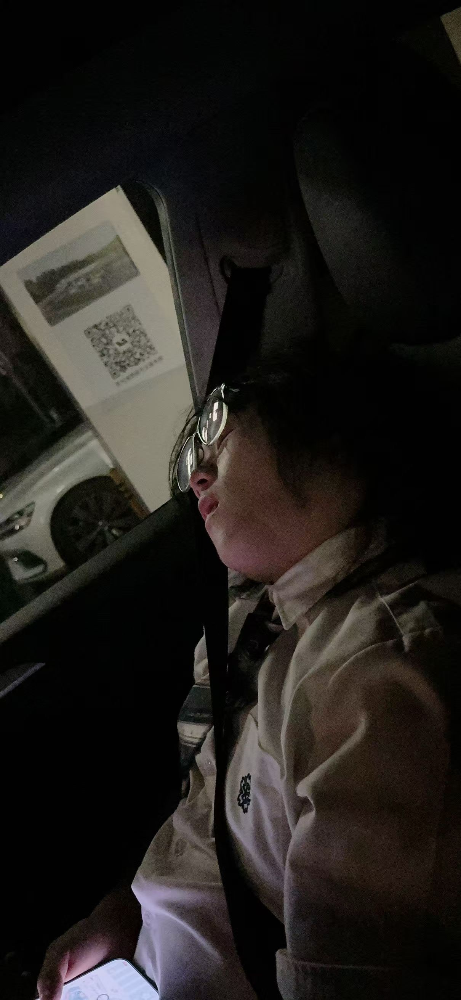
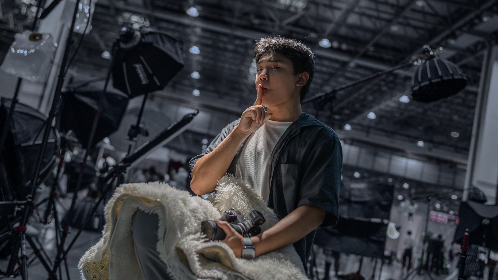

作品档案 / 01
NEKOFANTASY / 青春影像档案
把青春的奇迹，
写进每一帧。
猫幻次元是一间充满幻想与灵感的二次元摄影棚。我们用光影记录角色、故事与那些值得被记住的瞬间。
STUDIO ADDRESS 江苏省苏州市相城区漕湖街道春兴路11号 ↘OUR EVERYDAY, YOUR STORY. 始于日常，定格奇迹。
01 / 关于摄影棚
一片天空，装得下你的每一种想象。
猫幻次元配备专业级影视灯具系统，为不同风格的画面提供稳定而细腻的光影表现；三轴可动威亚让角色动作、悬浮构图与动态创作更自由。拍摄之外，我们也准备了超大休息空间，让妆造、沟通与等待都能舒适从容。
100㎡ 开阔空间4m 挑高自然光∞ 创意可能
02 / 设备列表
专业灯光，为每个画面定调。
01爱图仕 660c全彩 LED 灯×1
02爱图仕 360c全彩 LED 灯×2
03过曝 300c Pro全彩 LED 灯×2
04神牛 QT600影室闪光灯×1
05神牛 QT400影室闪光灯×2
03 / 影棚地址
04 / 作品集
作品档案 / 02
05 / 合作摄影
与值得信赖的创作者一起，
留下更好的每一帧。
STUDIO OWNER / 棚主
澪 棚主
最强最无敌之人。
WECHATsakuraneko1210

合作摄影师
娟
擅长白棚、外景与后期。
WECHATlzy1583440

合作摄影师
方汐
欢迎联系咨询拍摄合作。
WECHATfangsiao1113